English translation for the Satellaview (SNES/Super Famicom) game トレジャーコンフリクス (Treasure Conflix) released in 1996 by Squaresoft.
The game mixes RPG elements with some airship fights in mode 7.
Most of the focus is on talking with NPCs and solving riddles trying to find the locations of treasures.
Tips for your first playthrough
- You can use L and R in conjunction with the D-pad to turn faster while in combat.
- You can only find a treasure after you’ve been given the clue or the map for that treasure.
- Treasure maps can be opened from the treasure chest on the bridge.
- Selecting a city on the navigation map will add a red arrow on the compass to that location.
You can remove the arrow by selecting “turn off navigation” on the same map.
(This GPS feature is not really useful anyway, as the world is not that big) - If you don’t know what to do to proceed in the story, go talk to Loud.
English patch
– July 2023 –
Patch file v1.2 is available here : BS Treasure Conflix (English) 1.2.zip
Version: 1.2
- Fixes some typos
- Add missing dialog line for Loud
- Clearer dialog for the hidden village
- Clearer clues for some treasures
– February 2023 –
Patch file v1.1 is available here : BS Treasure Conflix (English) 1.1.zip
- Fixes some typos
- Rephrases some clues
- Adds support for extended latin for other languages
– January 2023 –
Patch file v1.0 is available here : BS Treasure Conflix (English) 1.0.zip
Also available on romhacking.net : https://www.romhacking.net/translations/6786/
It applies to the following ROM :
File: BS Treasure Conflix
No-Intro: Super Nintendo Entertainment System (v. 20180813-062835)
ROM SHA-1: DFF1D22D662FED96F45AC3E722C79C93469CA421
ROM CRC32: F50FB0B7\
Tested with the following Satellaview bios: BS-X BIOS (English) [No DRM] [2016 v1.3]
More info about the Satellaview: https://project.satellaview.org/downloads.htm
Screenshots
| Japanese | English |
|---|---|
 |
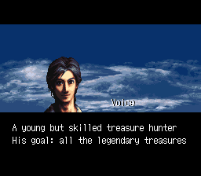 |
| 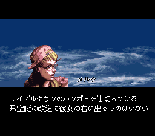 |  |
 |
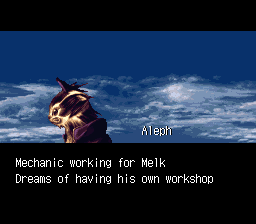 |
 |
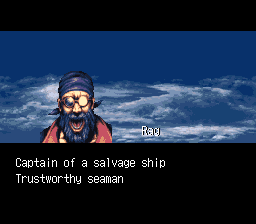 |
 |
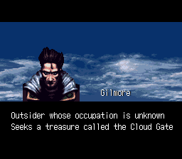 |
 |
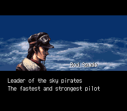 |
| 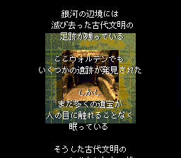 | 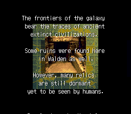 |
| 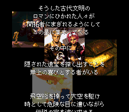 |  |
| 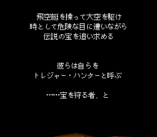 |  |
| 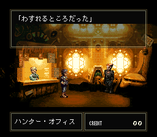 | 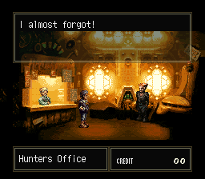 |
 |
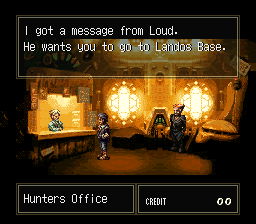 |
 |
 |
 |
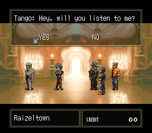 |
| 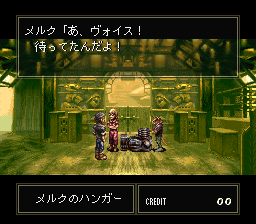 |  |
 |
 |
| 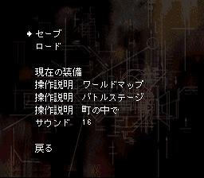 |  |
| 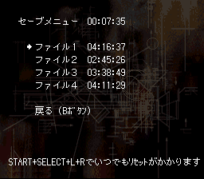 |  |
 |
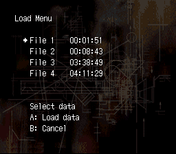 |
 |
 |
| 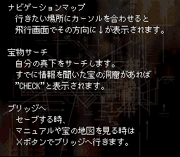 |  |
 |
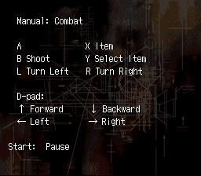 |
 |
 |
| 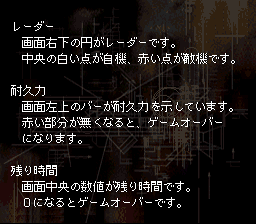 |  |
 |
 |
 |
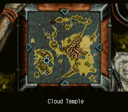 |
 |
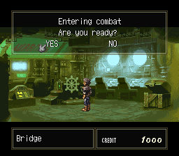 |
 |
 |
 |
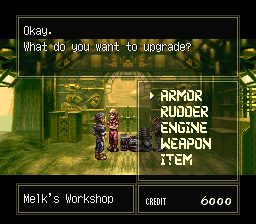 |
 |
 |
 |
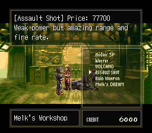 |
Treasure list
| Id | Icon | Japanese | Unlocked after |
Name | Clue/Map location | Clue |
|---|---|---|---|---|---|---|
| 01 | 不老不死の仙薬 | Stage 2 | Elixir of Life | Map in Landos Base | ||
| 02 | 神文玉爾 | Stage 2 | Imperial Seal | Map in Raizeltown | ||
| 03 | ドラゴンシールド | Stage 2 | Dragon Shield | Map in Kazusa Base | ||
| 04 | 大地神の鎧 | Stage 2 | Titan Armor | Map in Peppermint | ||
| 05 | サファイアの冠 | Stage 3 | Sapphire Crown | Map in Landos Base | ||
| 06 | 呪縛の魔鏡 | Stage 2 | Cursed Mirror | Map in Fort Fatras | ||
| 07 | 太陽の指輪 | Stage 2 | Sun Ring | Map in Peppermint | ||
| 08 | 金の聖杯 | Stage 3 | Golden Chalice | Map in Peppermint | ||
| 09 | 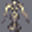 | 女神の像 | Stage 2 | Goddess Statue | From Nasca in the Cloud Temple | “Sacred inland sea, look at the surface from the southeast, it looks like a face in profile. Hide despair in the eyes and hope behind the nose…” |
| 10 | 金塊 | Stage 2 | Gold Bars | From Keane in Peppermint | “There’s a mountain range outside of Landos Base. Gold is hidden in one of the valleys.” | |
| 11 | Ａ゛キャッツアイ | Stage 2 | Cat’s Eye | Kazusa Office | “The Doom Triangle… the magical sea that swallowed up many lives… A wandering soul has lost its way in a large secluded forest and continues to drift. In the depths of the forest, where no one approaches, lies a shining cat’s eye.” | |
| 12 | 白金の飾り灯篭 | Stage 2 | Platinum Lantern | From Fish in Fort Fatras | “A platinum lantern is buried in one of its four legs.” | |
| 13 | 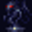 | 邪神の彫像 | Stage 2 | Evil God Statue | From Nasca in the Cloud Temple | “Sacred inland sea, look at the surface from the southeast, it looks like a face in profile. Hide despair in the eyes and hope behind the nose…” |
| 14 | アメジストの腕輪 | Stage 2 | Amethyst Bracelet | Kazusa Base Office | “The bracelet is in the valley of the fractured mountain.” | |
| 15 | ルビーの指輪 | Stage 2 | Ruby Ring | From Silva in Peppermint | “The ruby ring is a gift to the parents island, not the grandparents or grandchildren.” | |
| 16 | エメラルドの指輪 | Stage 2 | Emerald Ring | Fort Fatras Office | “Where the trees cross, the emerald shines.” | |
| 17 | 月光に光る石 | Stage 2 | Moonlight Stone | Landos Base Office | “On a barren island, stones shine in the moonlight.” | |
| 18 | 銀の祭器 | Stage 1 | Silver Vessel | Kazusa Base Office | “There is a large mountain northwest of Kazusa Base. In a clearing in the nearby woods, an ancient festival was held. The silver ceremonial vessel that was used is still lost in that forest.” | |
| 19 | 天使の弓矢 | Stage 2 | Angel’s Bow | Fort Fatras Office | “An angel shoots an arrow at the spring that heals the burning pain of the throat. The traveler falls asleep in the tree shade.” | |
| 20 | 魅惑の指輪 | Stage 2 | Enchanted Ring | Kazusa Base | “The spirit of the Dead Sea is bounded on one side by doomed waters. The ring shines on the land that bounds the other side.” | |
| 21 | 銀の燭台 | Stage 2 | Silver Candelabra | Raizeltown Office | “When the sea haze clears, stand at the tip of the cape and look in the distance, there is a large island nearby and a small island beyond. Straight ahead is another island where I hid the treasure.” | |
| 22 | 古代宗教経典 | Stage 2 | Ancient Scriptures | Fort Fatras Office | “…that was lost in the northern canyon.” | |
| 23 | 三つ目人のどくろ | Stage 2 | Three-Eyed Skull | Peppermint | “The Three-Eyed Skull is on one of the Triplet Islands.” | |
| 24 | 金の髪飾り | Stage 2 | Golden Barrette | Raizeltown Office | “The Golden Barrette is located at the base of the twisted arm.” | |
| 25 | 真珠の首飾り | Stage 1 | Pearl Necklace | Peppermint Office | “Seven pieces of the necklace fell and sank into the ocean. From seven, count down to four, there is hidden the pearly offspring.” | |
| 26 | 正史戦記 | Stage 1 | War Chronicle | Landos Base Office | In the Grand Sierra Mountains, which stretch to the north of here, there is an enclosed valley known as the Hermit’s Grove. The rumor says a valuable history book is hidden there. | |
| 27 | 黒珊瑚の首飾り | Stage 1 | Black Coral Hairpin | Raizeltown Office | “There’s a forest on the east coast. The Black Coral Hairpin is hidden somewhere there.” | |
| 28 | 古代の通貨 | Stage 2 | Ancient Coin | Landos Base | “In a forest, between twin mountains surrounded by green…” | |
| 29 | 古代王朝の宝冠 | Stage 2 | Royal Crown | Underwater in the Doom Triangle | ||
| 30 | 白鳳のつるぎ | Stage 2 | Divine Sword | Underwater in the Doom Triangle | ||
| 31 | ダイヤの指輪 | Stage 2 | Diamond Ring | Underwater in the Doom Triangle | ||
| 32 | 金の腕輪 | Stage 2 | Gold Bracelet | Underwater in the Doom Triangle |
Treasure map

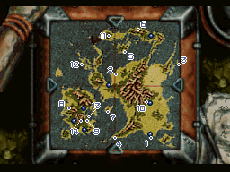
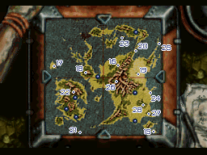
Auction
| Japanese | Name | Description |
|---|---|---|
| ケイヤー | Kayer | Male, 58 A strong-willed old man. His flashy gown shows his wealth. He is a wealthy merchant who made a huge fortune in his lifetime, but is now (formally) retired, leaving his children to take over his business. He now spends his savings on collecting treasures, which is his main purpose in life. One of his hobbies is to raise his voice at auctions. He is one of the richest auctioneers in Japan. His taste is rather normal. |
| セフマン | Sefman | Male, 67 He is an old man who seems to have lost his energy. He wears expensive-looking but plain-colored clothes. He is a collector who loves money. A landowner of a vast farmland. He shows an unusual obsession with gold treasures and has no interest in anything else. However, he is a bit fragile. Even during the auction, he lacks vision in his actions and is very careless. |
| ロゼルグ | Rozergue | Male, 33 Blonde hair and dressed like a gentleman. He comes from an aristocratic family and is rich by birth. He is very sarcastic and does not mind making fun of others. He is fond of saying, “Oh, well…” and " Huh…”. He has about the same level of wealth as anyone else. His hobbies are also normal, but he seems to be attracted to weird things. |
| オライオス | Orios | Male, 46 He has black hair and a black beard and is dressed like a gentleman. He is a descendant of a prominent samurai family. He is polite, firm, and has a refreshing personality. He has a hobby of collecting antiques, and is particularly interested in objects of historical value. He does not have much money. |
| ビアンヌ | Viane | Female, 26 She is dressed in a gaudy colored dress. She is the concubine of a wealthy merchant. She is high-minded and self-centered. She does not care about others. She loves jewelry. She is quick to burst into laughter. Although her financial resources are supposed to be lower than those of other auctioneers, she always pushes herself too hard and plays hardball. |
| ジェシュア | Jeshua | Female, 37 She wears a normal colored dress. She is from the inner palace of a famous family and has a modest personality. She is modest and is not rude to others. She is interested in objects of mysterious value. In fact, she is a dreamer and a bit dangerous. She is casually wealthy. |
| ボーンズ | Bones | Male, 48 He is also an event character (a very important character). He wears a unique robe. He is very interested in objects of historical value and has little interest in anything else. He is a bit indecisive despite his wealth. |
| バビール | Babil | Male, age unknown Wears extremely suspicious colored robes. Mysterious person of unknown address, occupation, age, and identity. He appears infrequently. When you think he was silent, he suddenly raises the amount of money overwhelmingly and leaves with the treasure in his hand, leaving the people around him dumbfounded. |
The description of the auctioneers was revealed in a BS broadcast of ゲーム虎の大穴スペシャル in Feb 1996.
Source: https://ameblo.jp/satebo/entry-12735967487.html
Credits
| Role | Name | - |
|---|---|---|
| Concept Design | 岡庭 真一郎 | Shinichiro Okaniwa |
| Story | 江藤 桂大 | Keita Etō |
| Main Program | 杉本 浩二 | Koji Sugimoto |
| Main Graphics | 本根 康之 | Yasuyuki Honne |
| Music Composer | 仲野 順也 | Junya Nakano |
| Visual Design | 直良 有祐 | Yusuke Naora |
| Enemy Sequence | 鈴木 敏章 | Toshiaki Suzuki |
| Enemy Graphics | 浜坂 真一郎 | Shinichiro Hamasaka |
| Event Program | 遠藤 利男 | Toshio Endo |
| Character Graphics | 林 真佐秋 | Masāki Hayashi |
| World Map Graphics | 春木 あかね | Akane Haruki |
| Parameters | 岡崎 礼貴 | Hiroyoshi Okazaki |
| Auction Program | 松本 岳美 | Takemi Matsumoto |
| Sound Effect | 中村 栄治 | Eiji Nakamura |
| Sound Program | 赤尾 実 | Minoru Akao |
| Publicity | 山下 弘二 飯田 克信 |
Koji Yamashita Katsunobu Iida |
| Special Thanks | 花田 憲昌 佐々木 洋勝 |
Norimasa Hanada Hirokatsu Sasaki |
Translations
| Data | File |
|---|---|
| Bridge Menu | translations/menus/14-equipment.txt |
| Save Menu | translations/menus/14-equipment.txt |
| Load Menu | translations/menus/14-equipment.txt |
| Free Space Menu | translations/menus/14-equipment.txt |
| Manual Flight Menu | translations/menus/05-manual-map-1.txt translations/menus/05-manual-map-2.txt |
| Manual Combat Menu | translations/menus/07-manual-combat-1.txt translations/menus/08-manual-combat-2.txt translations/menus/09-manual-combat-3.txt |
| Manual Town Menu | translations/menus/10-manual-town-1.txt translations/menus/11-manual-town-2.txt translations/menus/12-manual-town-3.txt translations/menus/13-manual-town-4.txt |
| Equipment Menu | translations/menus/14-equipment.txt |
| Equipment List | translations/menus/15-equipment-list.txt |
| Introduction | translations/menus/16-introduction.txt |
| GPS Town Names | translations/menus/17-locations.txt |
| Screen | File |
|---|---|
| Raizeltown | 85B89.txt |
| Raizeltown (Office) | 85131.txt |
| Melk’s Workshop | 860A5.txt |
| Melk’s Workshop Menu Equipment List |
84905.txt |
| Bridge | 8A5AB.txt |
| Bridge (endgame) | 8C421.txt |
| Landos Base | 86BA2.txt |
| Landos Base (Office) | 8666D.txt |
| Shady Auction Hall | 8AE2B.txt |
| Treasure List Auction Bones |
84100.txt |
| Kazusa Base | 87876.txt |
| Kazusa Base (Office) | 871DF.txt |
| Peppermint | 88AE2.txt |
| Peppermint (Office) | 88507.txt |
| Serge’s Workshop | 890E7.txt |
| Fort Fatras | 8809C.txt |
| Fort Fatras (Office) | 87CAE.txt |
| Sunken Ship 1 | 8AD80.txt |
| Sunken Ship 2 | 8ADA7.txt |
| Sunken Ship 3 | 8ADE5.txt |
| Inside a cave | 8AE04.txt |
| Hidden Village | 89A1A.txt |
| Salvage Ship | 8934B.txt |
| Rag’s Workshop | 8987B.txt |
| Cloud Temple | 8A151.txt |
| Conqueror’s Altar | 8A473.txt |
Restrictions:
Menu : Max length 43 characters (no margin).
Equipment names : Max length 19 characters.
GPS Town Names: The length of each hardcoded in MenuReader.java (to be improved).
Dialog: 35 chars (18 double chars)
Location: Max length: 17 chars
| Special Code | Bytes | Display in English |
|---|---|---|
| {7F} | [0x7F] | Switch mode to halfwidth/latin (ABCDEF…) |
| {02} | [0x02] | Switch mode to hiragana/kanji/latin wide (ＡＢＣＤＥＦ…) |
| {03} | [0x03] | Switch mode to katakana/kanji |
| {00} | [0x00] | Space |
| {NL} | [0x2F] | Line break |
| {NL2} | [0x2F] | Line break |
| {NL4} | [0x04] | Line break |
| {TAB} | [0x2A] | Tabulation |
| {SP} | [0x81, 0x40] | Wide space |
| {7B} | [0x7B] | Pause during dialog timed on the following byte (e.g. {7B}{20}, {7B}{30}) |
| {EL} | [0x7C] | End of line |
| {WP} | [0x05] | Waiting for player input during dialog |
| {*} | [0x02,0x85,0x49,0x7F] | * (Necessary cause the halfwidth alphabet has no *) |
| {→} | [0x81, 0xA8] | → Right arrow |
| {←} | [0x81, 0xA9] | ← Left arrow |
| {↑} | [0x81, 0xAA] | ↑ Up arrow |
| {↓} | [0x81, 0xAB] | ↓ Down arrow |
| {20} | [0x20] | Space |
Any other hexadecimal value in {} will be written as a byte of the same value.
Missing translations / Bugs
| Text | Files | Comment |
|---|---|---|
| 「前に一度、教えたのにまた聞きたいの か? 金は取らないが……」 ＹＥＳ ＮＯ |
87CAE 871DF 8666D 85131 88507 |
This line is present in the 5 offices data. No pointer found for any of them. |
| そうか、情報が欲しくなったら 金をためて、またここに来な |
data: 85131 pointers: 80100 |
Possible global pointer 7188 (A9 DE 03) |
| ラウド「ヴォイス! わかったぞ! 古代民の隠れ里はフォートファトラス の西のジャングルの中だ! ……何、知ってた? |
data: 85131 pointers: 80100 |
Two pointers (99 08) in 316 and 325 |
| 制御不能! | data: 8C421 pointers: 828DB |
No pointer found. |
Unused data
Character
When you’re idle on the title screen, you get a demo reel presenting all the characters.
In the data, there is an extra character called Bayu, absent from the game:
| Japanese | English |
|---|---|
| バユウ | Bayuu |
| ショップのジジィ。 | Old man in a shop |
| どこにでもいるオッサン | Ordinary middle-aged man |
| ７２歳 男性 未婚 | 72, male, single |
Offset: 78EF-7946
Combat messages
In the game, there are 5 battles, referred to as “stages”.
They are fights against various enemies in a mode-7 view.
In the game code, there are several messages displayed at the beginning of each stage but the japanese version only shows the first one.
I don’t know if it’s a bug introduced in the emulated version or original.
The missing messages are meant to show the stage number, the time limit and the objective.
| Japanese | English |
|---|---|
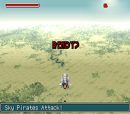 |
Memory Mapping
Not exhaustive.
I only needed that to break down the game data.
| Offset | Content | Comment |
|---|---|---|
| 095B7-0AC5F | Texts for: - introduction -continue screen - save screen - ship or item names? |
Decompressed to 7E4800 Encoded in SJIS |
| 14DB0-14E6F Dialog box |
Tiles | |
| 14E70-14F6F Info box |
 |
Tiles |
| 18000-1802F |
19000 19EBA 1AD1D 1B832 1C6A8 1D5D9 1B832 1C6A8 1DFF9 1DFF9 1DFF9 1DFF9 1DFF9 1DFF9 1DFF9 19EBA | 16 Pointers |
| 18100-1812F |
20000 2079D 20D69 2154F 21999 21E64 2154F 21999 22693 22693 22693 22693 22693 22693 22693 2079D | 16 Pointers |
| 18200-1822F |
1E29C 1E6D9 1EA16 1EC69 1EEAD 1EF9A 1EC69 1EEAD 1F227 1F227 1F227 1F227 1F227 1F227 1F227 1E6D9 | 16 Pointers |
| 18300-1832F |
1F2BB 1F37A 1F470 1F59B 1F6C1 1F75F 1F59B 1F6C1 1F8A0 1F8A0 1F8A0 1F8A0 1F8A0 1F8A0 1F8A0 1F37A | 16 Pointers |
| 18400-1842F |
2316C 26C83 278CE 2862C 2917A 2938E 2862C 2917A 29D25 29D25 29D25 29D25 29D25 29D25 29D25 26C83 | 16 Pointers |
| 18500-1852F |
22A39 22BC2 22C4F 22D07 22D9E 22F86 22D07 22E92 23086 23086 23086 23086 23086 23086 23086 22BC2 | 16 Pointers |
| 18600-1862F |
30000 40000 44197 30003 34F55 39F3C 4B421 4B421 4B421 4B421 4B421 4B421 4B421 4B421 4B421 40000 | 16 Pointers |
| 18700-1872F |
3E600 3E603 3E706 3E7FC 3E8DC 3E9FB 3EB98 3EACB 3EACB 3EACB 3EACB 3EACB 3EACB 3EACB 3EACB 3E603 | 16 Pointers |
| 1F2BB-1F379 Sky Sprite |
 |
Compressed Tiles |
| 50000-5001A | 60000 633CF 6678E 68B23 6A6B5 6C4E5 50300 51D9C 54608 | 9 pointers |
| 50100-50123 | 56148 5651F 56981 56DA1 57078 5746D 5789F 57CD7 6E300 6E770 6EC15 6F081 | 12 pointers |
| 50200-50220 | 6F53C 6F607 6F706 6F7FB 6F8CE 6F9C8 6F9FF 6FAE2 6FBCB 6FC78 6FD50 | 11 pointers |
| 51D9C-54607 Room 3 |
 |
Compressed Tiles |
| 54608-56147 Room 2 |
 |
Compressed Tiles |
| 56148-5651E Room 1 |
 |
Compressed Tile map for tiles 68B23 |
| 5651F-56980 Room 4 |
Compressed Tile map for tiles 60000 |
|
| 5789F-57CD6 Room 3 |
Compressed Tile map for tiles 51D9C |
|
| 60000-633CE Room 4 |
 |
Compressed Tiles |
| 68B23-6A6B4 Room 1 |
 |
Compressed Tiles |
| 6E770-6EC14 Room 2 |
 |
Compressed Tile map for tiles 54608 |
| 70100-76878 Character sprites |
 |
Compressed Tiles |
| 76A00-7A569 Sprites |
 |
Compressed Tiles |
| 7A600-7B0FD Texts |
Compressed Tiles 4bpp (Width: 8) |
|
| 7B100-7B119 | ? | Pointers |
| 7B200-7B796 | ? | ? |
| 7B797-7B80A | ? | ? |
| 7B80B-7B894 | ? | ? |
| 7B895-7C030 | ? | ? |
| 7C031-xxxxx | ? | ? |
| 7C302-xxxxx | ? | ? |
| 7C8F5-7CCB7 | ? | Compressed Tile map |
| 7CCB8-7CF63 | ? | Compressed Tile map |
| 7CF64-7D25A | ? | Compressed Tile map |
| 7D25B-7D30B | ? | Compressed Tile map ? |
| 7D30C-7D657 | ? | Compressed Tile map ? |
| 7D658-7DA86 | ? | Compressed Tile map ? |
| 7DA87-7DB1E | ? | Compressed Tile map ? |
| 7E200-7FFFF | ? | ? |
| A0380-A03A7 | ||
| A03A8-A03EE |
Compressed |
|
| A1DFD-A5706 Title screen |
Compressed Tiles |
|
| A5720-A5A39 Title screen |
Compressed Tile map for tiles A1DFD |
|
| A5A3A-A5D02 Title screen |
 |
Compressed Tile map for tiles A1DFD |
| A5D03-A5DD9 Title screen |
Compressed Tile map for tiles A1DFD |
|
| AAA78-AE4C3 Continue screen |
 |
Compressed Tiles |
| AE4C4-AEA4F Continue screen |
 |
Compressed Tile map for tiles AAA78 |
| B0000-B05CA Ship Sprite |
Compressed Tiles |
|
| B0616-B06AA | ||
| B06AB-B0FCF Mode 7 texts sprite |
 |
Compressed Tiles |
| B0FD0-B173D Mode 7 texts sprite |
 |
Compressed Tiles |
| B173E-B18C4 Text sprites |
Compressed Tiles |
|
| B19C7-B6C44 Intro screen |
 |
Compressed Tiles |
| B6C45-B6ED9 Intro screen |
 |
Compressed Tile map for tiles B19C7 |
| B6ED8-B7151 Intro screen |
 |
Compressed Tile map for tiles B19C7 |
| B7150-B74A7 Intro screen |
 |
Compressed Tile map for tiles B19C7 |
| B7657-B9DF3 Intro screen |
 |
Compressed Tiles |
| B9DF4-BA14C Intro screen |
Compressed Tile map for tiles B7657 |
|
| F6644-F82B7 Intro screen |
 |
Compressed Tiles |
| F82B8-F86A5 Intro screen |
 |
Compressed Tile map for tiles F6644 |
Font Mapping
The game uses the font provided in the BS-X bios.
This font is mostly mapped on the Shift-JIS standard where every character is coded by two bytes.
Not part of the SJIS:
- 8-pixel wide latin characters.
- 8-pixel wide katakanas (commonly known as half-width kanas).
| Offset | Content | Comment |
|---|---|---|
| 48000-50000 | Kanjis: 88 9F 89 40 8A 40 8B 40 - 8B 5B |
|
| 50000-58000 |  |
Kanjis: 8B 5C - 8B xx 8C 40 8D 40 8E 40 8F 40 90 40 - 90 B0 |
| 58000-60000 |  |
Kanjis: 90 B1 - 90 xx 91 40 92 40 93 40 94 40 95 40 |
| 60000-68000 |  |
Kanjis: 96 40 97 40 98 40 99 40 9A 40 9B 40 |
| 68000-70000 |  |
Kanjis: 9C 40 9D 40 9E 40 9F 40 E0 40 |
| 70000-78000 |  |
Kanjis: E1 40 E2 40 E3 40 E4 40 E5 40 E6 40 |
| 78000-80000 |  |
Kanjis: E7 40 E8 40 E9 40 EA 40 |


Share this post: